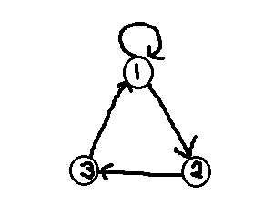

Viikon aiheena on erityisesti syklit ja vahvasti yhtenäiset komponentit. Myös viime viikon teema jatkuu osittain.
Uolevi haluaa antaa lahjan jokaiselle ystävälleen. Uolevi ei halua antaa samaa lahjaa ystäville, jotka tuntevat toisensa, koska muuten lahja ei vaikuta henkilökohtaiselta. Toisaalta Uolevin varastossa on vain kahdenlaisia lahjoja: hän voi antaa joko kirjan tai karkkipussin. Onko Uolevin tavoite mahdollinen?
Oletetaan esimerkiksi, että Uolevin ystävät ovat A, B, C ja D. A tuntee kaikki muut ystävät, kun taas muut eivät tunne toisiaan. Nyt lahjojen jakaminen on mahdollista esimerkiksi niin, että A saa kirjan ja kaikki muut saavat karkkipussin.
Oletetaan sitten, että A ei tunne ketään, kun taas B, C ja D tuntevat kaikki toisensa. Nyt lahjojen jakaminen ei ole mahdollista, koska B:llä tulisi olla eri lahja kuinC:llä ja D:llä ja C:llä ja D:llä ei saa olla samaa lahjaa.
Toteuta metodi:
boolean lahjajako(int n, int[] mista, int[] minne)
Parametri n on Uolevin ystävien määrä. Se on kokonaisluku välillä 1..105. Ystävät on numeroitu kokonaisluvuin 1..n.
Taulukot mista ja minne kuvaavat ystävyyssuhteet. Ystävyyssuhteiden määrä on 0..105.
Metodin tulee palauttaa true, jos lahjojen jakaminen on mahdollista Uolemin haluamalla tavalla, ja muuten false.
| # | metodin kutsu | haluttu palautusarvo |
|---|---|---|
| 1 |
lahjajako(4, new int[] {1, 2, 3}, new int[] {2, 3, 4})
|
true
|
| 2 |
lahjajako(4, new int[] {1, 1, 1}, new int[] {2, 3, 4})
|
true
|
| 3 |
lahjajako(3, new int[] {1, 2, 3}, new int[] {2, 3, 1})
|
false
|
| 4 |
lahjajako(4, new int[] {1, 2, 3}, new int[] {2, 3, 1})
|
false
|
Opintosuunnittelija Keijo Kojootti suunnittelee kurssien esitietovaatimuksia. Tee hänen avukseen ohjelma, joka tarkastaa, onko esitiedoissa sykli.
Toteuta metodi:
public boolean sykli(Esitieto[] esitiedot), joka palauttaa true jos annetuissa esitiedoissa on sykli.
Esitiedot on esitetty taulukkona Esitieto-olioita. Esitieto-oliot toimivat siten, että kurssi e.esi tulee suorittaa ennen kurssia e.kurssi.
Seuraavissa esitiedoissa ei ole sykliä:
{% highlight text %} a b b c a d d c d b c e {% endhighlight %}Seuraavissa esitiedoissa taas on sykli:
{% highlight text %} a b b c a d d c d b c a {% endhighlight %}Tehtävänäsi on selvittää jokin käypä järjestys kurssien käymiseen, kun kurssien väliset esitiedot on annettu.
Toteuta metodi:
ArrayList<String> jarjestys(Esitieto[] esitiedot)
Voit olettaa että annetuissa esitiedoissa ei ole sykliä.
Seuraavien esitietojen eräs käypä suoritusjärjestys on a d b c e.
Seuraavien esitietojen eräs käypä suoritusjärjestys on ohpe ohja javalabra tira tiralabra lama ohma ohtu ohtuprojekti.
Eulerin kierrokseen ja sen löytämiseen, voit tutustua esimerkiksi kisakoodarin käsikirjasta (luku 20).
Eulerin kierros verkossa on polku, joka kulkee jokaista kaarta pitkin täsmälleen kerran ja saapuu takaisin lähtöruutuun.
Toteuta metodi:
ArrayList<Integer> eulerinKierros(boolean[][] verkko), joka palauttaa verkon jonkin Eulerin kierroksen. (Voit olettaa että sellainen on olemassa.) Syötteenä oleva verkko on esitetty vierusmatriisina -- samoin kuin tehtävässä 1.
Eräs Eulerin kierros on 0, 1, 2, 3
Eräs Eulerin kierros on 0, 1, 2, 5, 6, 4, 2, 3
Eräs Eulerin kierros on 0, 1, 2, 5, 6, 4, 2, 3
Sinulle annetaan syötteenä n-solmuisen suunnatun verkon vierusmatriisi, missä n on korkeintaan 1000. Lisäksi tiedetään, että verkossa on ainakin yksi solmu, josta on kaari itseensä. Tehtävänä on selvittää, onko olemassa jotain sellaista positiivista kokonaislukua m, jolle pätee seuraava: valitaanpa mitkä tahansa kaksi (eri) verkon solmua a ja b, niin on olemassa polku solmusta a solmuun b, jonka pituus on tasan m.
Toteuta metodi:
boolean ratkaise(boolean[][] verkko), joka ratkaisee yllä kuvatun ongelman verkolle, jonka vierusmatriisi annetaan parametrina.
Vierusmatriisia
{% highlight text %} 110 001 100 {% endhighlight %}vastaava verkko on
Tässä verkossa jokaisen solmuparin välillä on reitti, jonka pituus on 4:
Tehtävänannon mukaista lukua m ole esimerkiksi seuraavalle verkolle, sillä jokaisesta solmusta pääsee ainoastaan itseensä.
{% highlight text %} 100 010 001 {% endhighlight %}